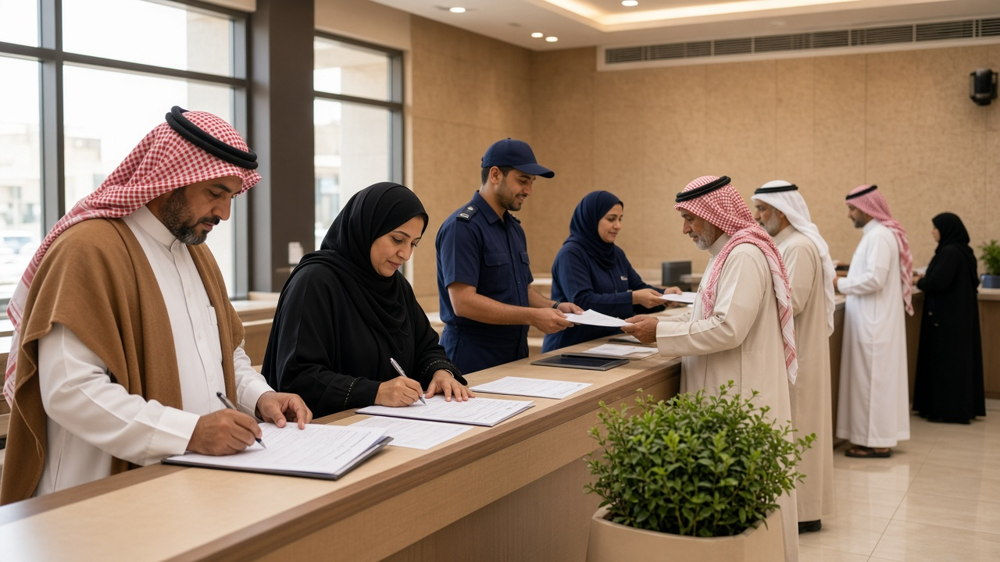

تابع تقدّم المشاريع على الخريطة
نسب الإنجاز والحالة والمواعيد عبر الوكالات الثلاث.
- مكتمل
- قيد التنفيذ
- يحتاج متابعة
- متأخر
- متوقف
- مخطط
وكالة
وكالة التحول الرقمي
تتولى رقمنة خدمات الأمانة، والبنية التقنية، والبيانات، وحماية الأنظمة.
100٪متوسط هذا العرض · 3 مشاريع
 مكتمل
مكتمل
بوابة التصاريح الإلكترونية
تقديم تصاريح الحفر والفعاليات إلكترونيًا مع مسار اعتماد ظاهر.
100٪
وسط حائل
أُنجز في 20 أكتوبر 2024
 مكتمل
مكتمل
منصة الخدمات البلدية الموحدة
بوابة واحدة لخدمات المستفيد من الرخص والاستعلامات والبلاغات.
100٪
حي النقرة
أُنجز في 30 نوفمبر 2024
 مكتمل
مكتمل
توحيد مركز البيانات البلدي
نقل أنظمة الأمانة إلى مركز بيانات واحد بمعايير نسخ احتياطي واضحة.
100٪
محيط المطار
أُنجز في 15 ديسمبر 2024
وكالة
وكالة الاستراتيجية
تتولى التخطيط والأداء والدراسات والشراكات التي توجّه أعمال الأمانة.
100٪متوسط هذا العرض · مشروعان
 مكتمل
مكتمل
الخطة الاستراتيجية لأمانة حائل 2024-2028
وثيقة الاتجاه والأهداف ومؤشرات الوكالات حتى عام 2028.
100٪
وسط حائل
أُنجز في 30 سبتمبر 2024
 مكتمل
مكتمل
تقرير المؤشرات الحضرية
خط أساس لخدمات المدينة وجودة الأحياء قبل توسيع المتابعة.
100٪
حي السمراء
أُنجز في 1 ديسمبر 2024
وكالة
وكالة التميز المؤسسي
تتولى الجودة وتجربة المستفيد وتطوير الإجراءات والابتكار.
100٪متوسط هذا العرض · مشروعان

مكتملبرنامج صوت المستفيد
قنوات ملاحظات موحدة وربطها بتحسين الخدمات الأكثر تذمرًا.
100٪
حي السويفلة
أُنجز في 30 أكتوبر 2024
 مكتمل
مكتمل
تطبيق معيار التميز المؤسسي
مواءمة أعمال الأمانة مع معيار التميز وإغلاق فجوات التقييم.
100٪
وسط حائل
أُنجز في 15 نوفمبر 2024